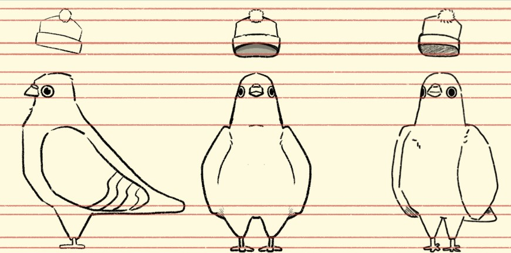

Robert
Descripción
Robert vivía en el bosque, donde desarrolló habilidades excepcionales de orientación y observación. Se convirtió en un experto navegante, conociendo cada rincón y sendero entre los árboles. Cuando la oscuridad cayó, estaba entregando un mensaje importante entre las colonias de aves.
Model Sheet
Diseño base del personaje usado como guía de modelado y animación.
Concept Art
Visualización del estilo artístico inicial y expresividad del personaje.
Explora el modelo en 3D
Usa el mouse para rotarlo y hacer zoom.